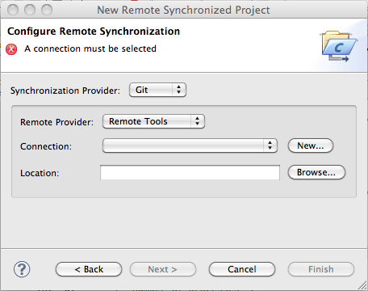
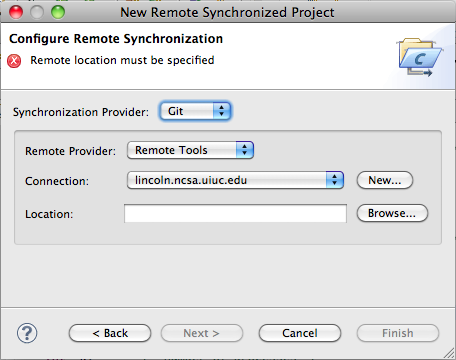
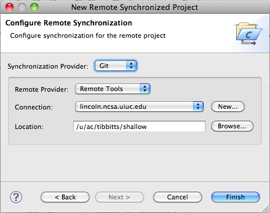

Synchronized projects consist of files that are mirrored on the local system as well as on the remote system. Editing occurs locally and each file is sync'd with the remote system when it is changed, created, or deleted. This enables faster interaction with the files and editor, more CDT editor features since the files are local, and continued interaction for editing etc. if the network connection is lost.
To host a synchronized project, the remote system must:
To create a new Synchronized Project, Select File > New > Other... and in the wizard selection dialog, select Remote > Synchronized Project.
Or, from the context menu (right-mouse) in the Project Explorer, select New > Synchronized Project

Then give the project a name and select a project type

Select Next >
On the next page, select a Synchronization Provider (Git) and selected an existing connection or create a new one.

Here we create a new remote connection with the Remote Tools Remote Provider by selecting the New... button. The Target Environment Configuration dialog is shown. Fill in host name, user, and password (or other authentication information).

Select Finish. The connection will be tested at this point before returning to the Configure Remote Synchronization page.
Back on the the Configure Remote Synchronization page:

Specify a remote location by selecting Browse...
A Browse Directory dialog appears in which you can navigate to find the directory in which your new project's files will be contained on the remote system.
Hit OK to return.
The Configure Remote Synchronization page now contains the location of the remote files:

Hit Finish to complete project creation.
Edit the files as you would any local project. Each time you save a file, the remote copy of the file is saved on the remote system. If you create or delete files, the remote system is updated appropriately.

See Local Vs. Remote Projects for more information on the different kinds of local and remote projects.